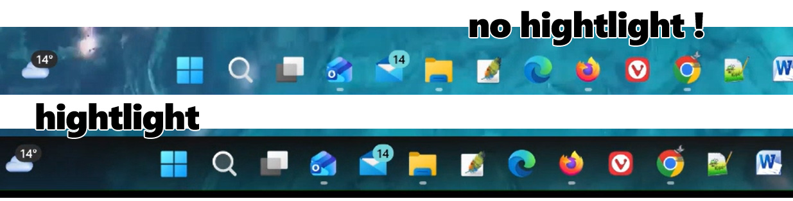
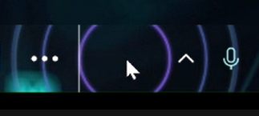
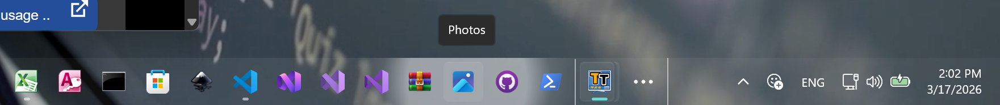

Taskbar Effects
Transparent Taskbar+ Lite
Choose the right effect for your needs

Choose the right effect for your needs
The version 2.1 of the Transparent Taskbar+ Lite has so far 3 different effects to choose. Whether you want a minimalist transparent look or a vibrant animated gradient, a minimal highlight effect can make your taskbar look more robust and can help you visualize imporant sections when you focus on it.

Blinks the whole taskbar with a cool video effect gradient for 1 second, just to identify visually the region of the taskbar.
Very useful when you use a transparent style in the taskbar/and or the wallpaper has colors that blend with the app icons.

When you click somewhere on the taskbar there is a highlight burst bubble effect.
Useful when you want to be sure that a click has happened, either on an icon app (click on a shortcut) or on an empty area of the taskbar.

very useful especially when you use a transparent style on the taskbar and you want to focus on the mouse pointer. The Transparent Taskbar+ Lite will highlight the area behind the mouse pointer that visually brings focus on the app icon or the area your are interested.

When using one of the available effects, keep in mind that the app will make use of a very small percentage of the GPU when needed, when the mouse is over the Taskbar. If you don't enable effects, no gpu is used.

No. Transparent Taskbar+ Lite runs in the background and uses minimal system resources.
Yes. The browser interface requires an internet connection.
Yes. Open the system tray menu and select Exit to stop the application completely.
Get Transparent Taskbar+ Lite and start customizing your Windows taskbar today: